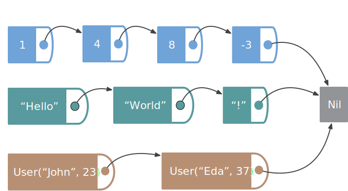
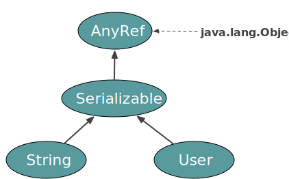

background-image: url(img/fp-tower/website-background.svg) class: center, middle, white .title[Generic functions <br> part 1] --- # List is a generic data structure .small-left[ <br> <br> <br> <br> ```scala List[Int] List[String] List[User] ``` ] .large-right[  ] --- # How to avoid duplication? .medium-left[ <br> <br> <br> <br> ```scala def size(list: List[Int] ): Int def size(list: List[String]): Int def size(list: List[User] ): Int ``` ] .large-right[ ] --- # Parametric function .medium-left[ <br> <br> ```scala def size[A](list: List[A]): Int ``` <br> ```scala size(List(1, 4, 8, -3)) // res1: Int = 4 size(List("Hello", "World", "!")) // res2: Int = 3 ``` ] .large-right[ ] --- # Parametric function .forty-two-left[ <br> <br> ```scala def size[Elem](list: List[Elem]): Int ``` <br> ```scala size(List(1, 4, 8, -3)) // res3: Int = 4 size(List("Hello", "World", "!")) // res4: Int = 3 ``` ] .large-right[ ] --- # Parametric function <br> ```scala def map[A](list: List[A], update: A => A): List[A] ``` <br> ```scala map(List(1,2,3,4), (x: Int) => x + 1) // res5: List[Int] = List(2, 3, 4, 5) map(List("Hello", "World"), (x: String) => x.reverse) // res6: List[String] = List("olleH", "dlroW") ``` --- # Parametric function <br> ```scala def map[A](list: List[A], update: A => A): List[A] ``` <br> ```scala val users = List(User("John", 23), User("Eda", 37), User("Bob", 18)) ``` ```scala map(users, (user: User) => user.name) // error: type mismatch; // found : App0.this.User => String // required: java.io.Serializable => java.io.Serializable // val users = List(User("John", 23), User("Eda", 37), User("Bob", 18)) // ^ ``` --- # Least Upper Bound (LUB) <br> .large-left[ ```scala def map[A](list: List[A], update: A => A): List[A] ``` <br> ```scala map(users, (user: User) => user.name) // error: type mismatch; // found : App1.this.User => String // required: java.io.Serializable => java.io.Serializable // map(users, (user: User) => user.name) // ^^^^^^^^^^^^^^^^^^^^^^^^^ ``` ] .medium-right[  ] --- # Parametric function <br> ```scala def map[A](list: List[A], update: A => A): List[A] ``` <br> ```scala val users = List(User("John", 23), User("Eda", 37), User("Bob", 18)) ``` ```scala map[User](users, (user: User) => user.name) // error: type mismatch; // found : String // required: App1.this.User // map[User](users, (user: User) => user.name) // ^^^^^^^^^ ``` --- # Parametric function in Dotty <br> ```scala def map[A](list: List[A], update: A => A): List[A] ``` <br> ```scala val users = List(User("John", 23), User("Eda", 37), User("Bob", 18)) ``` ```scala map(users, (user: User) => user.name) // Type Mismatch Error: // map(users, (user: User) => user.name) // ^^^^^^^^^ // Found: (user.name : String) // Required: User ``` --- # Parametric function <br> ```scala def map[From, To](list: List[From], update: From => To): List[To] ``` <br> ```scala val users = List(User("John", 23), User("Eda", 37), User("Bob", 18)) ``` ```scala map(users, (user: User) => user.name) // res12: List[String] = List("John", "Eda", "Bob") map(List(1,2,3,4), (x: Int) => x + 1) // res13: List[Int] = List(2, 3, 4, 5) ``` --- # All parametric types are not data structure <br> <br> ```scala trait JsonDecoder[A]{ def decode(value: Json): A } case class Predicate[A](value: A => Boolean) ```